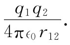
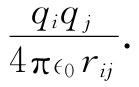
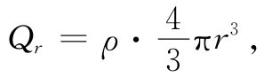
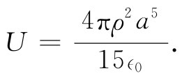
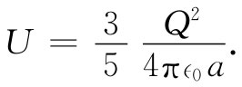

在力学的研究中，最有意义而又最有用的发现之一是能量守恒定律。有了力学系统的动能和势能表达式，我们无需考察两个不同时刻系统状态间发生的细节，而能发现两态间的关系。现在我们要来考虑静电系统的能量。在电学中，能量守恒原理也将为发现一系列有意义的事情而发挥它的作用。
在静电学中，相互作用的能量定律十分简单。实际上，这个问题我们已经讨论过。假设两个电荷q1 和q2 ，相距r12 。在这个系统中，就存在一定能量，因为要把两电荷移到一起需要做出一定量的功。我们已计算过将远离的两个电荷移到一起所做的功，它为
 （8.1）
从叠加原理我们也知道，如果存在许多个电荷，则作用于任一电荷上的总力，等于其他各电荷作用于它的力的总和。因此，可以断定：由多个电荷构成的系统的总能量，等于每一对电荷间的相互作用的各项之和。若qi 和qj 是任一对相距为rij 的电荷（图8-1），则这一特定电荷对的能量为：
 （8.2）
总静电能U等于所有可能的电荷对之间的能量的和：
如果有一个密度为ρ的电荷分布，式（8.3）的求和当然要用积分来代替。
图8-1 一个粒子系统的静电能等于每对粒子静电能的总和
我们应关注能量的两个方面：一是把能量概念应用 于静电学问题；二是运用各种不同的方法，计算 能量。对某些特殊情况，有时计算所做的功比按式（8.3）求和或计算相应的积分要容易。作为一个例子，让我们来计算把电荷集中到一个球体中，并具有均匀的电荷密度所需的能量。这一能量恰好等于把那些电荷从无限远处聚集起来所做的功。
图8-2 一个均匀带电球体的能量，可以通过将它设想为由一层层球壳组合成的而计算出来
设想该球体是由一层层无限薄的球壳构成的，在过程的每一阶段，我们聚集小量电荷并把它置于从r至r+dr的薄层中。继续这一过程，一直达到最后的半径a为止（图8-2）。设Qr 为已建立至半径为r的球体上的电荷，那么把电荷dQ移到这个球体上面所做的功为
若球体中的电荷密度为ρ，则电荷Qr 为

而电荷dQ为
dQ=ρ·4πr2 dr.
因此，式（8.4）变成：
要把电荷聚集成整个球体，所需的总能量则等于从r=0至r=a对dU的积分，即
 （8.6）
若希望把结果用球体的总电荷Q来表示，则为：
 （8.7）
可见，能量与总电荷的平方成正比而与球的半径成反比。我们也可以将式（8.7）理解为：对球体里的所有各对点来说，（1/rij ）这个量的平均值为6/5a。